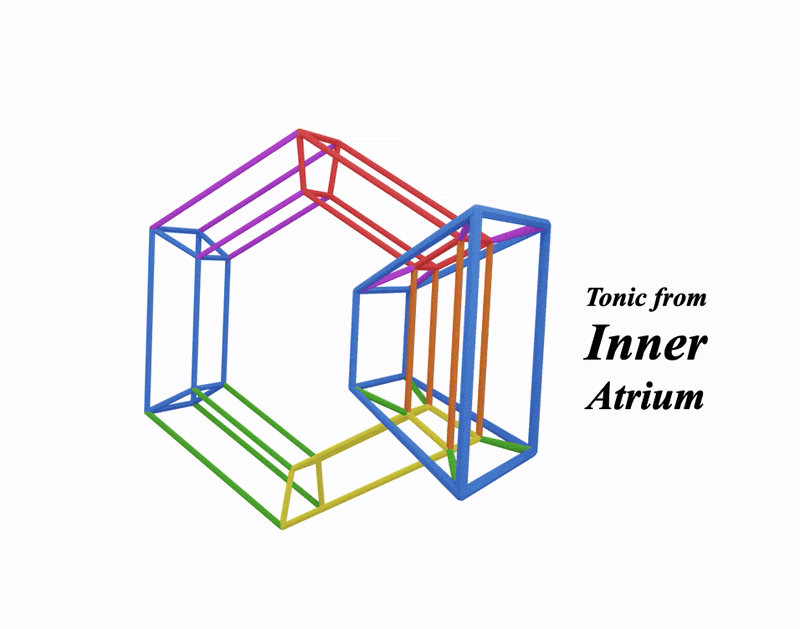

GEOMETRY:
This is an atrium:
Singular: Atrium. Plural: Atria.
Here's the duplicate inner atrium of the metaprism:
And here's them both in the metaprism
Its a shape that holds the three alpha cubes and the three diminished cubes
See how it maps to the colour wheel:
The three alpha cubes provide the three tonic cubes of the hypercubes
Focus on orange alphacube and see how it serves as the tonic alpha cube of the orange hypercube:

We can see how each hypercube gets its tonic alpha cube from the inner or outer atria:
(This relates to the innie and outie hypercubes we saw on the metaprism page)
The same goes for the diminsihed cubes
which have their own page here:
Diminished CubesWe've covered all the basic geometric features of metaharmony!
Let's do a recap
Back to Arcades | Recap